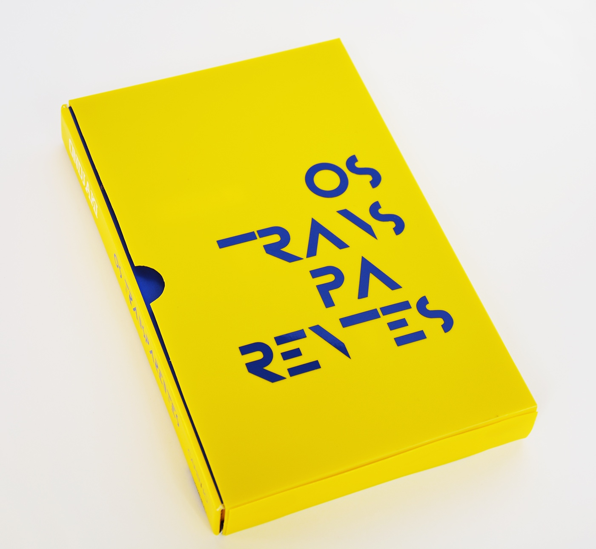
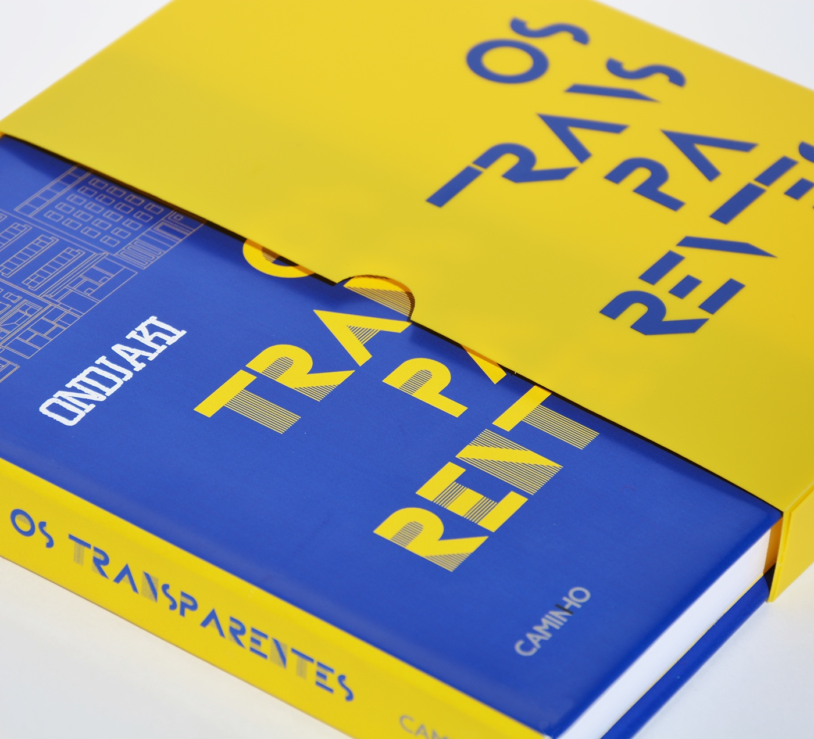
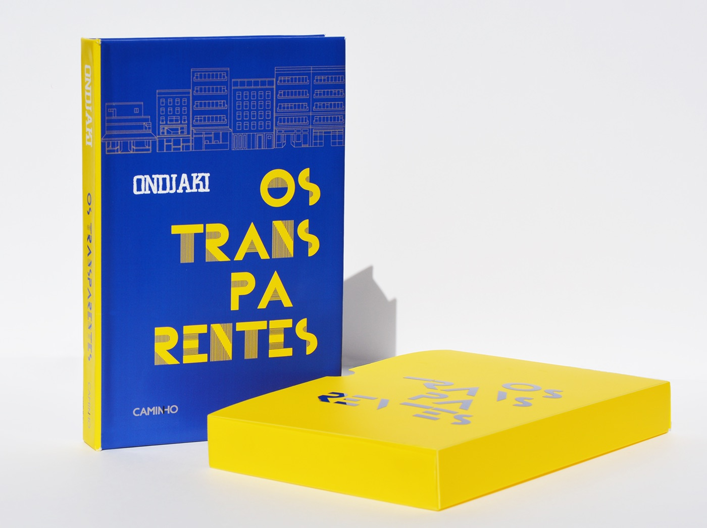
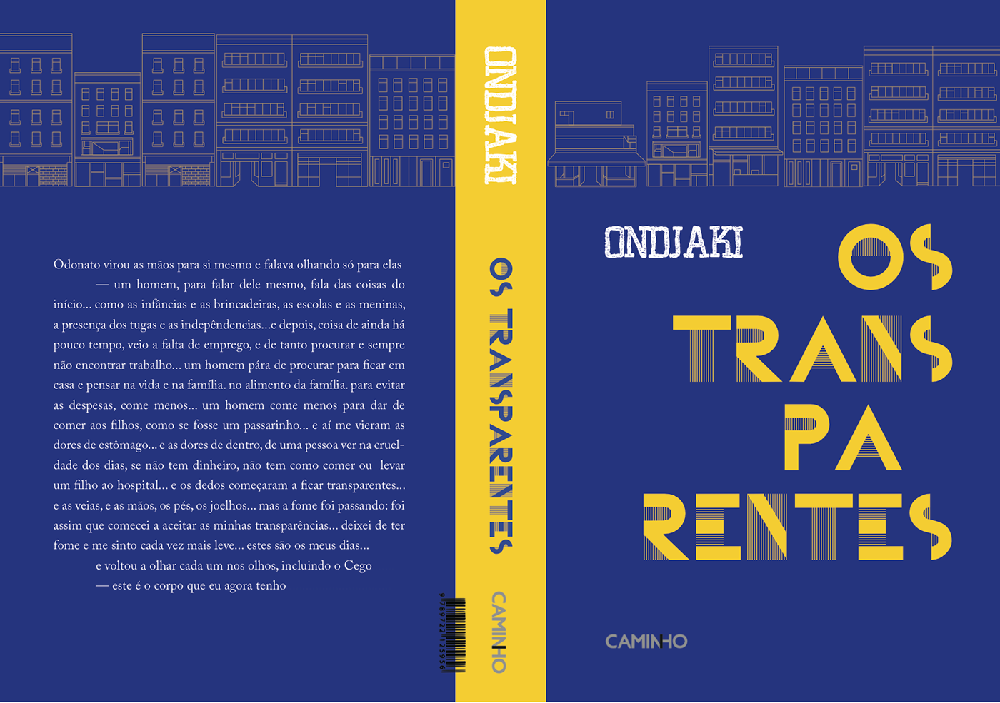

TRANSPARENT - ONDJAKI
Second Year of University
Model of the book cover
Model of the book cover
Model of the book cover
Final Art
For the fourth project we had to do a cover for a book by a Portuguese author, unknown and young. I chose "The Transparent" of Ondjaki, which tells the lives of the people living in a building in Luanda. These stories are common to many people in that city, thence the decision of my illustration containing several buildings. Another part of the book I wanted to be present was the idea of transparency. My illustration only consists of an outline, the typography has this duality of having some parts where you can see better and others where you can't and the material chosen for the cover is somewhat transparent to reinforce this concept. The coverage, in polypropylene, used to protect the book, contains parts of the title with thick typography to reveal some of the book's identification but also to arouse curiosity to the reader.

© Faculdade de Belas Artes da Universidade do Porto | 2016 | Portefólio Tânia Ramos